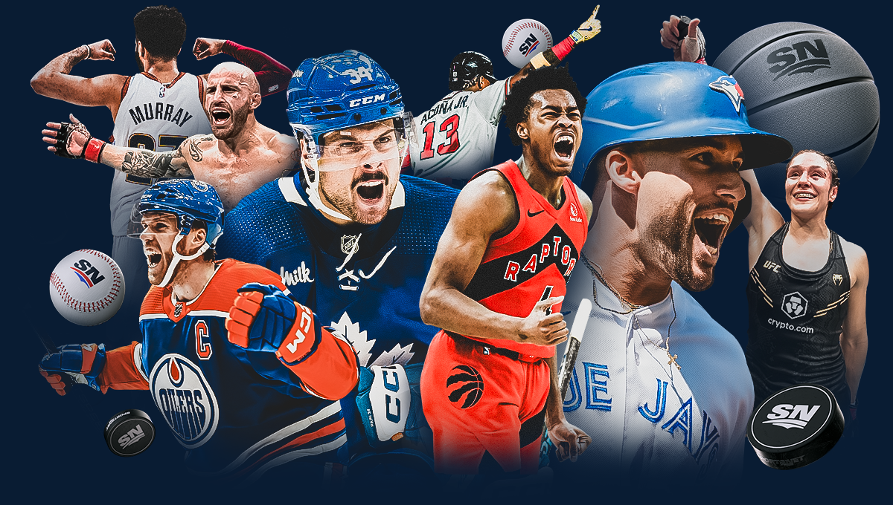

Throughout my childhood, I played and enjoyed a lot of games and they greatly influenced me in the future, so I really wanted to include gaming as one of my favorite things. Even though I usually play mobile games, sometimes, when I can fully appreaciate all the effort that was put into a game, it makes me really happy. The following's are a few other reasons I like gaming:
I was first introduced to programming in the second semester of my first year in High School and ever since then I liked programming for it gives you freedom to create and it also makes you curious forcing to explore new things everyday. I am thankful to my school for such an amazing option because if I haven't learned about programming here, who knows if I would have been able to come across it anywhere in the future. Anyway, here are a few reasons I like programming:

Sports have always been a passion of mine, mainly because I love physcial activities in general since I am the type of person who can't sit on the same place for a long time(ironic because I also like programming). My favorite sport is any sport, I love them all beacuse of how interestiong and unique they all can be in there own way, but if i had to chose a few specfic ones, i would probably say badminton, soccer and basketball. There are other reasons I love sports, like: